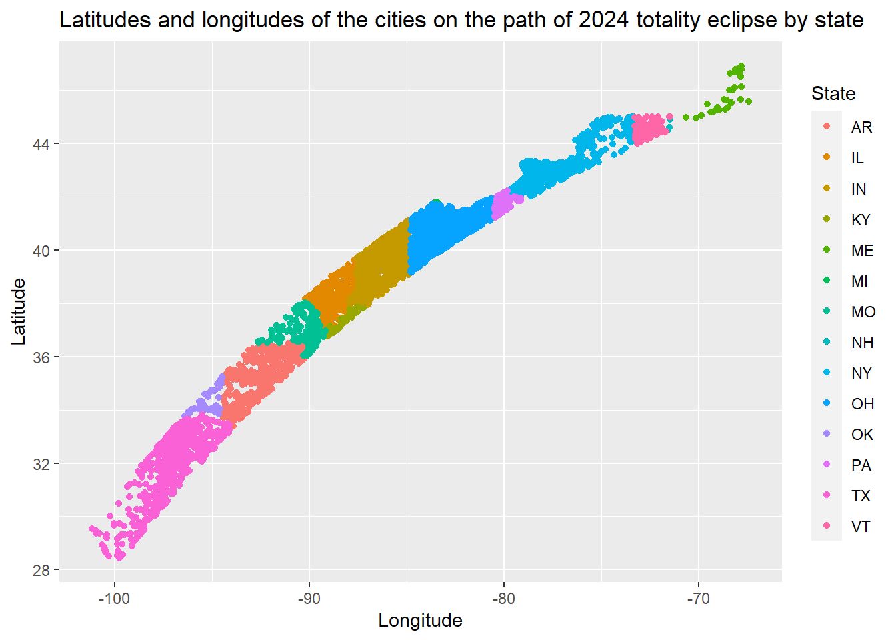
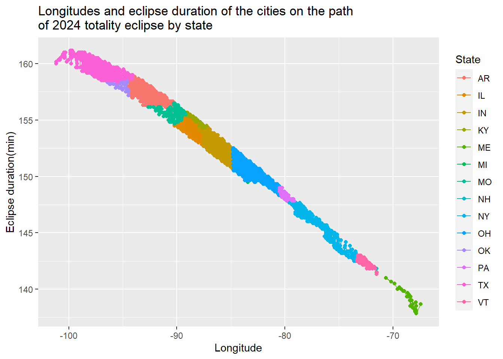
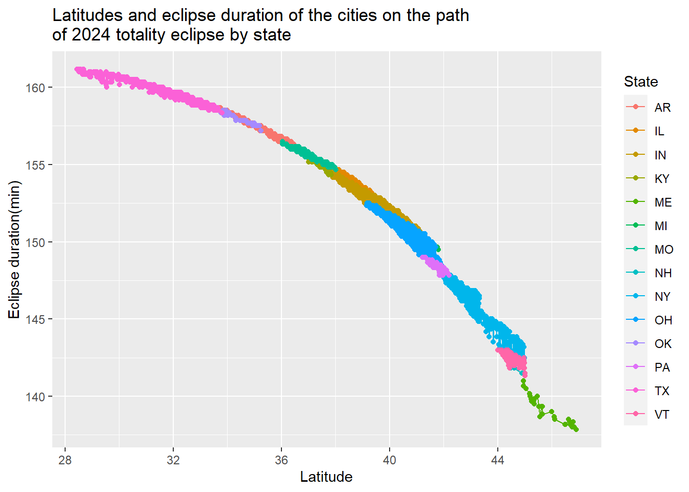

── Conflicts ────────────────────────────────────────── tidyverse_conflicts() ──
✖ dplyr::filter() masks stats::filter()
✖ dplyr::lag() masks stats::lag()
✖ dplyr::src() masks Hmisc::src()
✖ dplyr::summarize() masks Hmisc::summarize()
ℹ Use the conflicted package (<http://conflicted.r-lib.org/>) to force all conflicts to become errors
Warning: package 'kknn' was built under R version 4.3.3
library(gtsummary)
Attaching package: 'gtsummary'
The following objects are masked from 'package:recipes':
all_double, all_factor, all_integer, all_logical, all_numeric
library(pROC)
Warning: package 'pROC' was built under R version 4.3.3
Type 'citation("pROC")' for a citation.
Attaching package: 'pROC'
The following objects are masked from 'package:stats':
cov, smooth, var
Load Tidy Tuesday Data
Load 2023 & 2024 US Solar Eclipses Data
#Read directly from GitHubeclipse_annular_2023 <- readr::read_csv('https://raw.githubusercontent.com/rfordatascience/tidytuesday/master/data/2024/2024-04-09/eclipse_annular_2023.csv')
Rows: 811 Columns: 10
── Column specification ────────────────────────────────────────────────────────
Delimiter: ","
chr (2): state, name
dbl (2): lat, lon
time (6): eclipse_1, eclipse_2, eclipse_3, eclipse_4, eclipse_5, eclipse_6
ℹ Use `spec()` to retrieve the full column specification for this data.
ℹ Specify the column types or set `show_col_types = FALSE` to quiet this message.
Rows: 3330 Columns: 10
── Column specification ────────────────────────────────────────────────────────
Delimiter: ","
chr (2): state, name
dbl (2): lat, lon
time (6): eclipse_1, eclipse_2, eclipse_3, eclipse_4, eclipse_5, eclipse_6
ℹ Use `spec()` to retrieve the full column specification for this data.
ℹ Specify the column types or set `show_col_types = FALSE` to quiet this message.
Rows: 31363 Columns: 9
── Column specification ────────────────────────────────────────────────────────
Delimiter: ","
chr (2): state, name
dbl (2): lat, lon
time (5): eclipse_1, eclipse_2, eclipse_3, eclipse_4, eclipse_5
ℹ Use `spec()` to retrieve the full column specification for this data.
ℹ Specify the column types or set `show_col_types = FALSE` to quiet this message.
Rows: 28844 Columns: 9
── Column specification ────────────────────────────────────────────────────────
Delimiter: ","
chr (2): state, name
dbl (2): lat, lon
time (5): eclipse_1, eclipse_2, eclipse_3, eclipse_4, eclipse_5
ℹ Use `spec()` to retrieve the full column specification for this data.
ℹ Specify the column types or set `show_col_types = FALSE` to quiet this message.
#save the data in the "data" foldersaveRDS(eclipse_annular_2023,here("data","eclipse_annular_2023.rds")) saveRDS(eclipse_total_2024,here("data","eclipse_total_2024.rds")) saveRDS(eclipse_partial_2023,here("data","eclipse_partial_2023.rds")) saveRDS(eclipse_partial_2024,here("data","eclipse_partial_2024.rds"))
Four datasets with similar structures were provided. For this exercise, I chose ‘eclipse_total_2024’. This dataset contains information of cities in the US on the path of 2024 totality eclipse.
1.Load, wrangle and explore the data
#Read saved rds data of 2024 totality eclipsetotal_2024<-readRDS( here("data", "eclipse_total_2024.rds"))#Summarize variables in the datasetdescribe(total_2024)
total_2024
10 Variables 3330 Observations
--------------------------------------------------------------------------------
state
n missing distinct
3330 0 14
Value AR IL IN KY ME MI MO NH NY OH OK
Frequency 365 252 586 38 28 3 168 4 403 693 41
Proportion 0.110 0.076 0.176 0.011 0.008 0.001 0.050 0.001 0.121 0.208 0.012
Value PA TX VT
Frequency 71 591 87
Proportion 0.021 0.177 0.026
--------------------------------------------------------------------------------
name
n missing distinct
3330 0 2938
lowest : Abbott Abington Acorn Ada Adams
highest: Zanesville Zeigler Zephyr Zinc Zionsville
--------------------------------------------------------------------------------
lat
n missing distinct Info Mean Gmd .05 .10
3330 0 3330 1 38.33 4.494 31.08 32.46
.25 .50 .75 .90 .95
35.42 39.24 41.22 43.07 44.27
lowest : 28.4461 28.505 28.5089 28.5258 28.5699
highest: 46.689 46.7671 46.7884 46.8365 46.9112
--------------------------------------------------------------------------------
lon
n missing distinct Info Mean Gmd .05 .10
3330 0 3330 1 -86.93 8.064 -97.77 -96.92
.25 .50 .75 .90 .95
-92.41 -86.56 -82.31 -77.40 -74.96
lowest : -101.159 -101.153 -100.953 -100.943 -100.882
highest: -67.8683 -67.8322 -67.8319 -67.8308 -67.4292
--------------------------------------------------------------------------------
eclipse_1 [secs]
n missing distinct
3330 0 416
lowest : 17:10:20 17:10:30 17:10:40 17:10:50 17:11:00
highest: 18:22:10 18:22:20 18:22:30 18:22:40 18:22:50
--------------------------------------------------------------------------------
eclipse_2 [secs]
n missing distinct
3330 0 398
lowest : 17:55:20 17:55:30 17:55:40 17:56:00 17:56:10
highest: 19:03:30 19:03:40 19:03:50 19:04:00 19:04:20
--------------------------------------------------------------------------------
eclipse_3 [secs]
n missing distinct
3330 0 2012
lowest : 18:27:30 18:27:32 18:27:33 18:27:36 18:27:37
highest: 19:32:27 19:32:29 19:32:34 19:32:40 19:34:00
--------------------------------------------------------------------------------
eclipse_4 [secs]
n missing distinct
3330 0 2032
lowest : 18:30:24 18:30:35 18:31:26 18:31:35 18:31:43
highest: 19:35:06 19:35:08 19:35:17 19:35:18 19:35:25
--------------------------------------------------------------------------------
eclipse_5 [secs]
n missing distinct
3330 0 340
lowest : 19:04:40 19:04:50 19:05:00 19:05:10 19:05:30
highest: 20:02:30 20:02:40 20:02:50 20:03:00 20:03:20
--------------------------------------------------------------------------------
eclipse_6 [secs]
n missing distinct
3330 0 293
lowest : 19:51:20 19:51:30 19:51:40 19:51:50 19:52:10
highest: 20:40:40 20:40:50 20:41:00 20:41:10 20:41:30
--------------------------------------------------------------------------------
According the summaries above, there are 3330 cities from 14 states on the path of 2024 totality eclipse. None of the variables contain missing values. The latitude of the cities ranges from 28.4461 to 46.9112; the longitude ranges from -101.159 to -67.4292.There are duplicate names for the cities (2938 distinct names).
#Calculate eclipse duration total_2024<-total_2024 %>%mutate(duration=as.numeric(difftime(strptime(eclipse_6, "%H:%M:%S"),strptime(eclipse_1, "%H:%M:%S"),units ="mins")))#Plot latitudes and longitudes of the cities by stateggplot(total_2024, aes(x = lon, y = lat, group = state, color = state)) +geom_point() +labs(title ="Latitudes and longitudes of the cities on the path of 2024 totality eclipse by state",x ="Longitude",y ="Latitude",color ="State")

#Plot eclipse duration and longitudes of the cities by stateggplot(total_2024, aes(x = lon, y = duration, group = state, color = state)) +geom_line() +geom_point() +labs(title ="Longitudes and eclipse duration of the cities on the path \nof 2024 totality eclipse by state",x ="Longitude",y ="Eclipse duration(min)",color ="State")

#Plot eclipse duration and latitudes of the cities by stateggplot(total_2024, aes(x = lat, y = duration, group = state, color = state)) +geom_line() +geom_point() +labs(title ="Latitudes and eclipse duration of the cities on the path \nof 2024 totality eclipse by state",x ="Latitude",y ="Eclipse duration(min)",color ="State")

#Make correlation matrix for latitude, longitude and eclipse durationcor(total_2024[,c('lat','lon','duration')])
lat lon duration
lat 1.0000000 0.9720235 -0.9662055
lon 0.9720235 1.0000000 -0.9916722
duration -0.9662055 -0.9916722 1.0000000
The correlation coefficients are all greater than 0.95, indicating very high correlation among the latitude, longitude and eclipse duration.
2.Determine the research question
With such correlated data and limited number of variables, it is difficult to come up with a research question. Thus, it is necessary to create some synthetic data. As eclipse is distracting and reduces daylight, it might increase the chance of traffic accidents. I would synthesize two variables: (1) whether the city had more traffic accidents on the day of eclipse than a week before, codes as Yes/No; (2) traffic infrastructure quality index, ranges from 1-10.
The research question would be: does longer eclipse duration increase the odds of traffic accidents among the cities on the path of 2024 totality eclipse?
I would use whether the city has more traffic accidents than a week before as the outcome, and use eclipse duration as the main predictor, and use state and traffic infrastructure quality index as covariates.
3.Pre-process data for analysis
Create synthetic variables:
more_accident: whether the city had more traffic accidents on the day of eclipse than a week before, codes as Yes/No. To create an artificial association, cities with eclipse duration>150 mins will have a 80% chance of being coded as ‘Yes’; cities with eclipse duration<=150 mins will have a 40% chance of being coded as ‘Yes’.
traffic: traffic infrastructure quality index, ranges from 1-10. The variable will take a random number between 1 and 10.
#set seedrngseed<-1234set.seed(rngseed)#function to generate more_accident variable based on durationgenerate_more_accident <-function(duration) {if (duration >150) {return(ifelse(runif(1) <0.9, 'Yes', 'No')) } else {return(ifelse(runif(1) <0.4, 'Yes', 'No')) }}#apply the function to create more_accident variabletotal_2024$more_accident <-sapply(total_2024$duration, generate_more_accident)#create traffic variableset.seed(rngseed)total_2024$traffic<-runif(3330, min =1, max =10)#check two synthetic variablesdescribe(total_2024$traffic)
total_2024$more_accident
n missing distinct
3330 0 2
Value No Yes
Frequency 807 2523
Proportion 0.242 0.758
mean_duration_by_accident <-aggregate(total_2024$duration, by=list(more_accident=total_2024$more_accident), FUN=mean)mean_duration_by_accident #check crude association
more_accident x
1 No 149.5698
2 Yes 154.0241
Split the data into a 75% train set and a 25% test set
#create a subset that contains variables for analysisdata_analysis<-total_2024 %>%mutate(state=as.factor(state), more_accident=as.factor(more_accident)) %>%select(state, duration, more_accident, traffic)#splits the dataset randomly into a 75% train and 25% test setdata_split <-initial_split(data_analysis, prop =3/4)train_data <-training(data_split)test_data <-testing(data_split)
4.Fit 3 different model types to the data using the tidymodels framework.
Logistic regression, Random forests, and K-nearest neighbors will be fit to the data.
#Fit logistic regression with 10-fold cross-validation#model specificationlogistic_spec <-logistic_reg() %>%set_engine("glm") %>%set_mode("classification")#define cross-validationset.seed(rngseed)cv_folds <-vfold_cv(train_data, v =10)#workflow creationlogistic_workflow <-workflow() %>%add_formula(more_accident~duration+state+traffic) %>%add_model(logistic_spec)#model fitting and evaluationset.seed(rngseed)fit_logistic <-fit_resamples( logistic_workflow, cv_folds,control =control_resamples(save_pred =TRUE))# print results (Accuracy and AUC)results_logistic <-collect_metrics(fit_logistic)print(results_logistic)
With 10-fold cross-validation, a logistic regression model generates an accuracy of 92.35%, and an AUC of 0.9696.
#Fit random forest with 10-fold cross-validation#random Forest model specificationrf_spec <-rand_forest(trees =100) %>%# using 100 treesset_engine("ranger") %>%set_mode("classification")#workflow creationrf_workflow <-workflow() %>%add_formula(more_accident ~duration+state+traffic) %>%add_model(rf_spec)#model fitting and evaluationset.seed(rngseed)fit_rf <-fit_resamples( rf_workflow, cv_folds,control =control_resamples(save_pred =TRUE))#print the results(accuracy and AUC)results_rf <-collect_metrics(fit_rf)print(results_rf)
With 10-fold cross-validation, a KNN model with 10 neighbors generates an accuracy of 98.76%, and an AUC of 0.9974.
5. Decide on the final model
All the three models have satisfying predictive power, as they all yield accuracy>90% and AUC>0.9. Although random forest and KNN models have slightly better performance, the logistic model is selected as the final model. This is because the main purpose of this analysis is to understand the relationship between the risk of having more traffic accidents than usual and the eclipse duration. The results for the logistic regression are much easier to interpret and understand than the other two models.
6. Evaluate the model performance on the test data
Fit logistic regression model to the entire train data and then fit the model to the test data to evaluate performance.
#fit the logistic model to the entire train data using the previous workflowlogistic_final_fit <-fit(logistic_workflow, data = train_data)#display model coefficientstidy(logistic_final_fit)
#fit the model to the test datatest_predictions <-predict(logistic_final_fit, new_data = test_data, type ="class")#calculate accuracytest_data$predicted <- test_predictions$.pred_classTest_accuracy <-accuracy(data = test_data, truth = more_accident, estimate = predicted)print(Test_accuracy)
#confusion matrix tableconf_mat(test_data, truth = more_accident, estimate = predicted)
Truth
Prediction No Yes
No 163 28
Yes 40 602
7. Summary
In the final logistic regression model, 1 min increase in the eclipse duration is associated with 2.46 times increase in the odds of having more traffic accidents than usual among the US cities on the path of 2024 totality eclipse (OR=2.46, 95% CI=2.01-3.04, P-value<.001). The model has an accuracy of 91.8% after being applied to the test data. These results are expected, as we assigned higher proportion of ‘Yes’ for cities with eclipse duration > 150 mins when the outcome variable was synthesized.
#display model summary (Odds ratios)tbl_regression(logistic_final_fit, exponentiate =TRUE)
To take full advantage of model formatting, e.g. grouping categorical variables,
please add the following argument to the `workflows::add_model()` call:
`blueprint = hardhat::default_formula_blueprint(indicators = 'none')`
Extracting {workflows} model fit with `workflows::extract_fit_parsnip(x) %>% tbl_regression(...)`
Extracting {parsnip} model fit with `tbl_regression(x = x$fit, ...)`